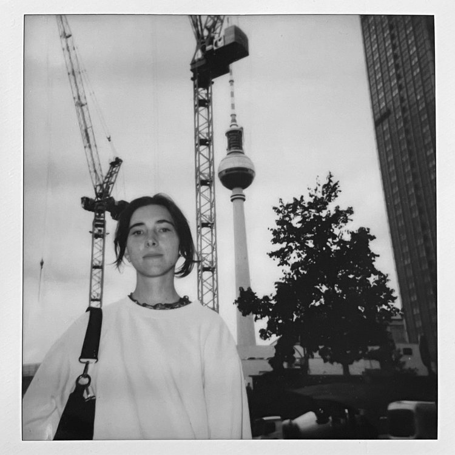

AMANDA EKBERG LEO
INTERACTION AND UX DESIGNER


ABOUT ME

Hello! I’m Amanda, a 27-year-old graduated Interaction Designer from Sweden who is excited to start my career in IxD and/ or UX-design. In my free time, I enjoy climbing and taking photos with my analog cameras. Feel free to contact me at leoekbergamanda@gmail.com or connect with me on LinkedIn.